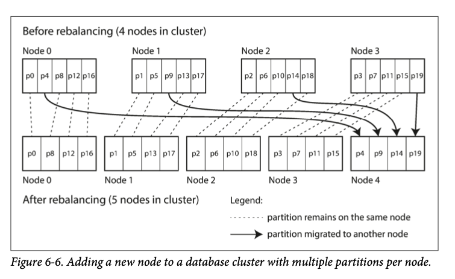

Chapter 6
Chapter 5 discussed about replication without partitioning.(same dataset on each machine) This chapter will talk about break very large dataset into partitions, aka sharding
Partition are defined where each record or document belongs to exactly one partition
As result, each partition is a small database itself
Scalability is the main reason for partitioning a dataset (different partition can be placed in a different machine/node for serving traffic), so query load is spread across different CPU and disk
Queries that can be done in a single partition will require only single machine to finish the query. So you can scale by adding more machine. Complex query where multiple partition can also benefit by executing the query in parallel (although it gets significantly harder)
We will look into different approach of partitioning and how indexing can effect your partition
Partitioning and Replication¶
Partitioning usually go with replication together. (doesn't make sense if you don't replicate a partition because you will have single point of failure)
A node may store more than 1 partition.
When leader-based replication scheme is used, everything from Chapter 5 still applies here
Partitioning of Key-Value Data¶
So we would like to split large dataset into partitions,
how do we decide which records to store on which nodes?¶
Our goal is to query load evenly across nodes. So 10 nodes should handle 10 times as much data and 10 times as read and write throughput of a single node
If the partition is unfair, some partition will have more data or queries than others (known as skewed) This makes the partition less effective. In extreme, all load could end up on one partition, so 9 out of 10 nodes are idle. The partition with higher load is called hot spot
One way to approach this is sort key by alphabetical order. Like encyclopedia.
Partitioning by Key Range¶
If you also know which partition is assigned to which node, then you can make your request directly to the appropriate node (or, in the case of the encyclopedia, pick the correct book off the shelf).
Simply have each volume begin with 2 letter will not work since data is distributed unevenly in this case.
volume 1 contains words starting with A and B, but volume 12 contains words starting with T, U, V, X, Y, and Z.
The partition boundaries need to adapt to the data. Within each partition, we can keep key in sorted order (LSM tree or BTree all has this property)
key range partition makes range scan very easy. (like a network of sensors) However, downside of key range partitioning is that certain access patterns can lead to hot spots.
For example, all writes from same day goes to same partition due to the nature of timestamp. To avoid this problem, you could add prefix with the sensor name for each timestamp. Now when fetch for a range of value on a certain day, you can send to different partition (sensor name) with a date query
Partitioning by Hash of Key¶
Many distributed DB use hash function to calculate partition of a given key For example, Cassandra and MongoDB use MD5. Once you have hash function picked, you can assign each partition a range of hashes (compare to range of keys) However, partition by hash we lose the property of efficient range queries. (we lost the sorted order) In MongoDB, when hash-based sharding is turned on, range query has to be sent to all partitions.
Cassandra used compound primary key to avoid some of the issue where first part of the key is hashed to determine the partition and rest are sorted (for example, (user_id, update_timestamp))
Skewed Workloads and Relieving Hot Spots¶
Hashing a key cannot avoid issue where all reads and writes are for same key. (Celebrity on twitter or other social media sites) example: 3% of Twitter's server are dedicated to Justin Bieber
(where the key is perhaps the user ID of the celebrity, or the ID of the action that people are commenting on). Hashing the key doesn’t help, as the hash of two identical IDs is still the same.
Most data systems cannot auto compensate for this skewed workload. Application has to deal with this individually. For example, add a random number to the beginning or end of the key. (Just two-digit random number would split the writes to the key evenly across 100 different keys, allow those keys to be distributed to different partitions)
This works but read have to do additional work, as they have to read all 100 partitions and combine it. So additional bookkeeping is required (which key are splited etc)
Partitioning of and Secondary Index¶
When determine which partition to go for a given primary key, previous example works well. But things get complicated when secondary index are involved because secondary index doesn't identify the record uniquely (find all actions by user 123, all articles containing word hogwash, all cars color is red, etc)
There are 2 main approaches to partitioning a database with secondary indexes
- Document-based partitioning
- Term-based partitioning
Partitioning Secondary Indexes by Document¶
Imagine operating a website for selling used cars. Each listing has unique ID (document ID. In order to search for car by color and make, you added secondary index. So partition is done by document ID
Reading from document-partitioned index requires scatter/gather which means read query needs to send to all partition since you don't know if this partition contains this secondary index or not and combine the results you get back
scatter/gather has long tail latency but widely used.
MongoDB, Riak [15], Cassandra [16], Elasticsearch [17], SolrCloud [18], and VoltDB [19] all use document-partitioned secondary indexes.
Partitioning Secondary Index by Term¶
Rather each partition has its own secondary index (local index), we can construct a global index that covers data in all partitions
You can't just store global index in a single node so global index are also partitioned.
red cars from all partitions appear under color:red in the index, but the index is partitioned so that colors starting with the letters a to r appear in partition 0 and colors starting with s to z appear in partition 1. The index on the make of car is partitioned similarly (with the partition boundary being between f and h).
This is called term-partitioned because the term we're looking for determines the partition of the index. term here would be color:red (term comes from full-text indexes)
exmapleshakespear:[1,2,3,6,8]
As before, we could partition by key(term itself) or hash
global index has better read efficiency compare to local index since it doesn't need scatter/gather but lower write efficiency. Because write to a single document may now effect multiple partitions
In practice, updates to global secondary indexes are often asynchronous (that is, if you read the index shortly after a write, the change you just made may not yet be reflected in the index). For example, Amazon DynamoDB states that its global secon‐ dary indexes are updated within a fraction of a second in normal circumstances, but may experience longer propagation delays in cases of faults in the infrastructure [20].
Rebalancing Partitions¶
Things changes over time in DB, - Query throughput increase, more CPU - Dataset size increase, need to add more RAM and disk - Swap machines All these changes might cause move data from one node to another This process of moving data from one node to another is called rebalancing Rebalancing is expected to meet some minimum requirements: - After rebalance, load should be shared evenly for nodes in the cluster - While rebalancing, database should still serve traffic - Only data that is necessary to move (reduce unnecessary copy thus reduce disk and network load)
Strategies for Rebalancing¶
hash mod N¶
First, not to hash mod by N, why?
The problem with the mod N approach is that if the number of nodes N changes, most of the keys will need to be moved from one node to another.
For example, say hash(key) = 123456. If you initially have 10 nodes, that key starts out on node 6 (because 123456 mod 10 = 6). When you grow to 11 nodes, the key needs to move to node 3 (123456 mod 11 = 3), and when you grow to 12 nodes, it needs to move to node 0 (123456 mod 12 = 0). Such frequent moves make rebalancing excessively expensive.
We need an approach that doesn’t move data around more than necessary.
Fixed number of partitions¶
Basically new node will steal some partition from current nodes and reverse if a node fails 
Dynamic partitioning¶
A fixed number of partition can easily got boundaries wrong and end up with all of the data in one partition. Reconfiguring the partition boundaries manually is very tedious
Dynamic partitioning is similar to BTrees split and merge:
When a partition grows to exceed a configured size (on HBase, the default is 10 GB), it is split into two partitions so that approximately half of the data ends up on each side of the split
Dynamic partitioning is not only suitable for key range–partitioned data, but can equally well be used with hash-partitioned data. MongoDB since version 2.4 supports both key-range and hash partitioning, and it splits partitions dynamically in either case.
Advantage: Adapt to dataset size when increased, i.e. when total data volume increase, number of partition increase
Partitioning proportionally to nodes¶
Compare with dynamic partitioning where partitions increase when dataset size increase, decrease when dataset size decrease, fixed number of partition the size of each partition is proportional to the size of dataset. The number of partition is independent of the number of nodes in both case.
A third option is to make the number of partitions proportional to the number of nodes in other words, have fixed number of partition per node.
so each partition grows when their dataset size grow, but when new node join the cluster it will randomly choose partition to split and take ownership from half of those partition. more like consistent hashing shown below https://tom-e-white.com/2007/11/consistent-hashing.html
Operations: Automatic or Manual Rebalancing¶
So is automatic partition rebalancing better or manual rebalancing is better?
Fully automated rebalancing can be convenient, because there is less operational work to do for normal maintenance. However, it can be unpredictable. Rebalancing is an expensive operation, because it requires rerouting requests and moving a large amount of data from one node to another. If it is not done carefully, this process can overload the network or the nodes and harm the performance of other requests while the rebalancing is in progress.
Because of rerouting, it can hurt systems performance
For that reason, it can be a good thing to have a human in the loop for rebalancing. It’s slower than a fully automatic process, but it can help prevent operational surprises.
Request Routing¶
Now we know how to partition our data onto multiple machines, but how do we route our client to correct partition when request comes in?
As partition are rebalanced, assignment of partition to nodes changes. So when client ask "I want to read or write to key foo", which IP address and port number we give to this client to connect to?
This is an instance of general problem called service discovery, which isn't just limit to DB but other type of server as well (load balancer).
Many companies have written their own in- house service discovery tools, and many of these have been released as open source [30].
There are few different approaches: 1. Allow clients to contact any node. (round-robin load balancer) if node contains the key then it takes the request, otherwise forward to the appropriate node 2. Send all request to routing tier first, then forward to correct node 3. Client know which node contains which partition and directly connect to the node upon request
But how does it (node, routing tier, or client) know when configuration changes? Because it needs all node agree which partition resides on which node, so this is another consensus problem
Many distributed data systems rely on a separate coordination service such as ZooKeeper. ZooKeeper will be the source of truth for mapping of partitions to nodes.
Client or routing tier can subscribe to this information in ZooKeeper. Whenever there is a partition changes ownership, ZooKeeper notifies routing tier to updates its routing info
For example, LinkedIn’s Espresso uses Helix [31] for cluster management (which in turn relies on ZooKeeper), implementing a routing tier as shown in Figure 6-8. HBase, SolrCloud, and Kafka also use ZooKeeper to track partition assignment. MongoDB has a similar architecture, but it relies on its own config server implementation and mongos daemons as the routing tier.
etcd is another open source that does similar things (mostly used in k8s/docker world)
Parallel Query Execution¶
For simple queries such as read or write single key, scatter/gather works pretty well. But in OLAP world, massively parallel processing(MPP) relational database often have queries contains several join, filtering, grouping, and aggregation operations. MPP query optimizer breaks this complex query into a number of execution stages and partitions, which can be executed in parallel on different nodes (reference 33 is about MapReduce, Spark etc)
Fast parallel execution of data warehouse queries is a specialized topic, and given the business importance of analytics, it receives a lot of commercial interest. We will discuss some techniques for parallel query execution in Chapter 10.
Snowflake went IPO
Summary¶
We explored different ways of partitioning in this chapter. The goal of partitioning is to spread data evenly across different machine for scale.
This requires to choose partition schemes and rebalance partition when nodes join/leaves the cluster
2 main approach was discussed - Key range partitioning (key are sorted like encyclopedia) - Hash partitioning (hash function is applied to each key, each partition own a range of hashes)
Hybrid approaches are possible (compound key)
We discussed when partition involved with secondary indexes where it also need to be partitioned
2 methods are used: - Document partitioned indexes (local index) - Term partitioned indexes (global index)
Last but not least, routing queries to correct partition is discussed.